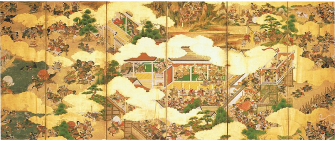

LES LIEN ENTRE FRANCO JAPONAIS
Entre guerre et amour, plus de 164 année de relation
EDITIONS SPECIAL
L'influence de nos 2 culture sur le marché du manga


Porfil

Paramétre

Partage de position

Aide

Entre guerre et amour, plus de 164 année de relation
L'influence de nos 2 culture sur le marché du manga
Les manga, ah un sujet temps adoré par nos 2 nations et ne créant absolument aucun conflit entre ces propres communauté
Créer en 1814 par Katsushika Hokusai et inspiré des peinture narrative de l’époque nara. Ce type de littérature a pris en 2 centenaire une très forte importance dans nos culture respective, même si en france, ce dit tsunami, n’est arrivé que très tardivement en 1990 avec la traduction française du roman akira pour enfin croitre dans les année 96 avec l’importation d’une 40éne de série culte t’elle que Nicky larson, slam dunk ou détective conan. Cet essor, bien que rendu difficile par la crise anti-manga lancée en 1990 menée par les médias et certains hommes politiques, a contribué à créer de fort liens entre les lecteurs de ces 2 pays et au fils des années plusieurs œuvres on était réciproquement réalisées en hommage à nos culture respective.

Alors rentrons dans le brief du sujet et parlons maintenant de quelques hommages réaliser dans cette optique.
Réalisé par tony valentin en 2013 et publié par les édition ankama, cette oeuvre touchant au genre nekketsu, fantasy, aventure et comédie et de thème sorcellerie, a servi de porte étendard pour tous les fan de manga en herbe tentent de réaliser le métier de ceux qui les ont fait rêver, au fils des année et de son adaptation en série animé ce manga a pris une certaine renommée et laissera sans aucun doute une trés grand porte ouverte à la french touch dans cette industrie.
Dessiné par Jun Mochizuki, l’écrivaine déjà connu pour avoir réalisé pandora hearts, et édité par squar enix, cette histoire nous raconte les aventure de Noé un vampire et de vanitas, un homme bien étrange s'était donné pour but de sauver tout les vampire de la malédiction de la lune bleu, mais qu’elle est le rapport avec notre sujet ? la réponse est très simple, l'intégralité de l’oeuvre se passe dans une france fantasmé mélanger avec une pointe de steampunk en voyageant d’un paris brillant de somptuosité au forêts froide des vosges, et tout ca en remplissent l’oeuvre de centaines de référence historique à la culture française, un véritable hommage a ne pas manquer.

A ne pas mélanger avec bungo stray dog, Stray dog est une oeuvre écrite par l’auteur français vanrah et édité par glénat, qui s’inspire librement du mythe de la bête du gévaudan pour la rendre plus que touchante en abordant les genres action, drame et fantasy.
Ce manga des années début des années 2000 réaliser par ninomiya tomoko et édité par la kodansha nous raconte l’histoire d’une jeune fille appeler Chiaki Shinichi, déjà excellente pianiste et violoniste, qui lors d’un concert français , tombe sous le charme du métier de chef d’orchestre, rêvant d’apprendre les enseignement d’une célèbre cheffe d'orchestre française, elle se retrouvera face à un mur, sa peur phobique des avions et des bateau, mais comment fera t elle donc pour accéder au métier de ces réves ?
Cette livre, scénarisé par rémi guérin, dessiné par guillaume lapeyre et édité par ankama éditions a pour synopsis : Lors du 20ème siècle ou l'écriture manuscrite donne vie à tout ce que vous inscrivez, une terrible guerre dont l'écriture manuscrite fut à la fois sa principale arme et raison de combat en a causé son illégalité interdisant de même la production de papier et remplaçant ceci par l'écriture numérique qui semble elle être inoffensive, Toutefois, un attentat sur un ministre britannique est survenu en plein milieux de londre, causé par Lord Black Flow, le plus grand criminel de l’histoire qui lui a réussi se procurer du papier pour réaliser ses méfait, et dans le but d' arrêter ces crimes, le maire de londre vas faire appelle à Jules Verne et un jeune étudiant dénommer Arthur Conan Doyle pour mener l'enquête.
A la fois inimaginable et parfaitement logique, cette oeuvre légendaire de victor hugo méritait de s’exporter au delà de la limite du roman et c’est ce que Arai Takahiro à réaliser avec l’aide de son éditeur (le Shogakukan) une oeuvre d’une beauté et d’une force incontestable, à redécouvrir sous un format audacieux et atypique
Entre nous, n'est ce pas merveilleux de voir temps d’amour entre ces 2 nations, personnellement, j’en reste fasciné et j'espère que cette valse manuscrite continuera jusqu'à la fin des temps.